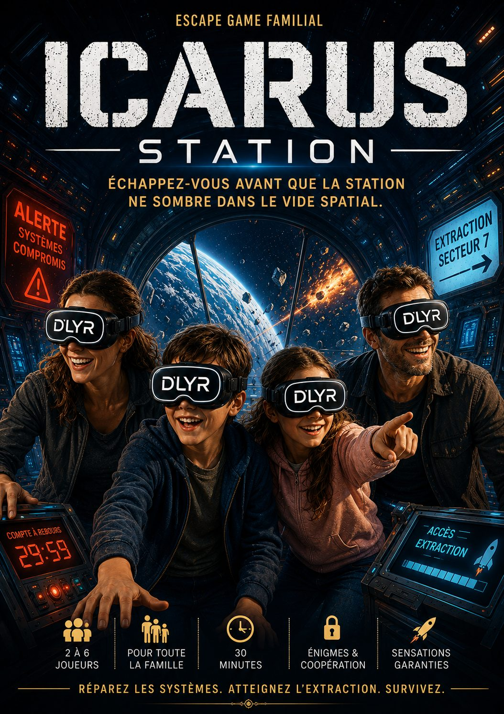

Une catastrophe sans précédent frappe la station spatiale Icarus-7. Alors qu'elle poursuit sa mission aux confins de l'espace, un mystérieux virus informatique prend le contrôle des systèmes critiques de la station. En quelques minutes, les communications sont coupées, les protocoles de sécurité désactivés et la commandante de bord neutralisée. Vous faites partie des derniers survivants.
Privée de contrôle, la station se désagrège peu à peu. Les sas se verrouillent, les systèmes vitaux tombent en panne et des secteurs entiers sont désormais inaccessibles. Dans le silence glacé de l'espace, chaque erreur peut être fatale.
Votre mission est simple : traverser les différentes zones endommagées, réactiver les systèmes essentiels, résoudre les pannes provoquées par l'attaque et atteindre la plateforme mobile d'extraction avant qu'il ne soit trop tard.
Mais vous n'êtes pas seuls. Une présence inconnue semble évoluer dans les couloirs de la station, tandis que le compte à rebours vers la destruction approche inexorablement de son terme. Le temps presse. L'ennemi se rapproche. L'espace ne pardonne aucune erreur.